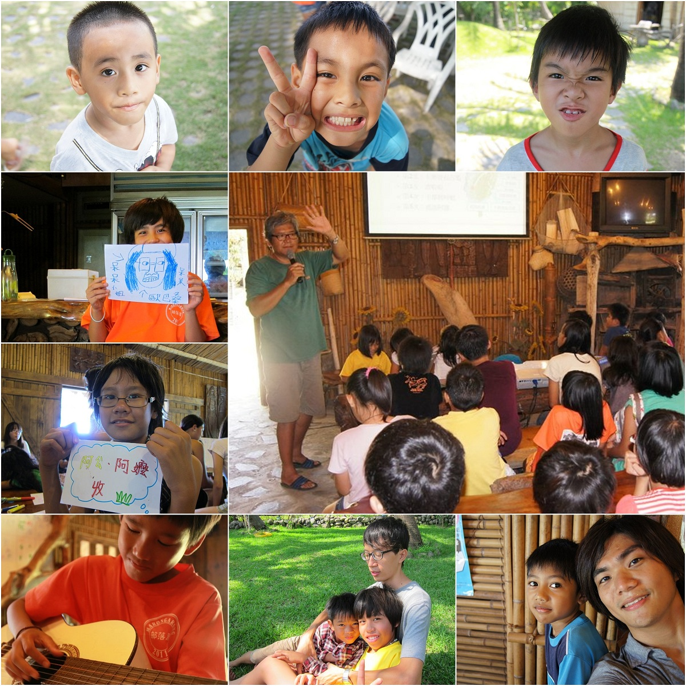
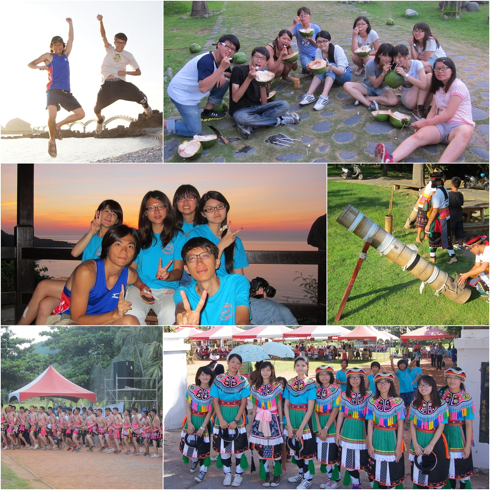

台東
2012
東河夏令營
照片回顧
Picture-1
營營四天，小朋友的天真融化的我們。
Picture-2
日出、豐年祭、成年禮，度假人生。
行程表
日期
7/9(Mon)~7/12(Thu)
7/13(Fri)
7/14(Sat)
7/15(Sun)
活動
小朋友
蚊子電影院
抓螃蟹
划竹筏
泥巴浴
三缺一
東管處
飛刀摘椰子
金樽日出團
豐年祭
家裡小豐年
三仙台日出
成年禮
鬥酒
該英
音樂欣賞

